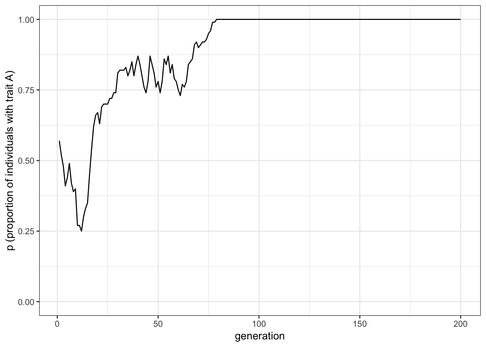
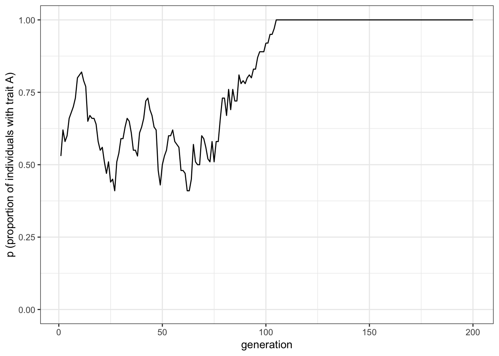
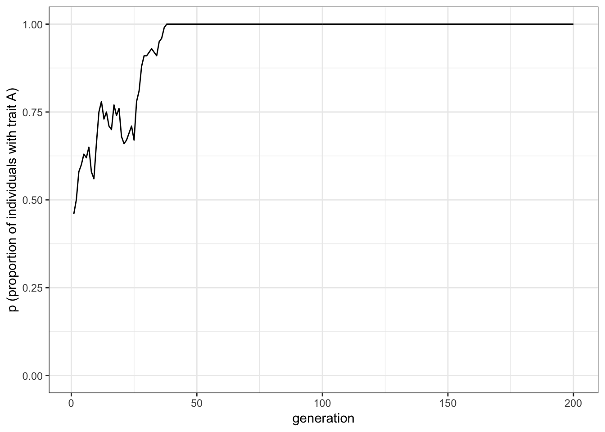
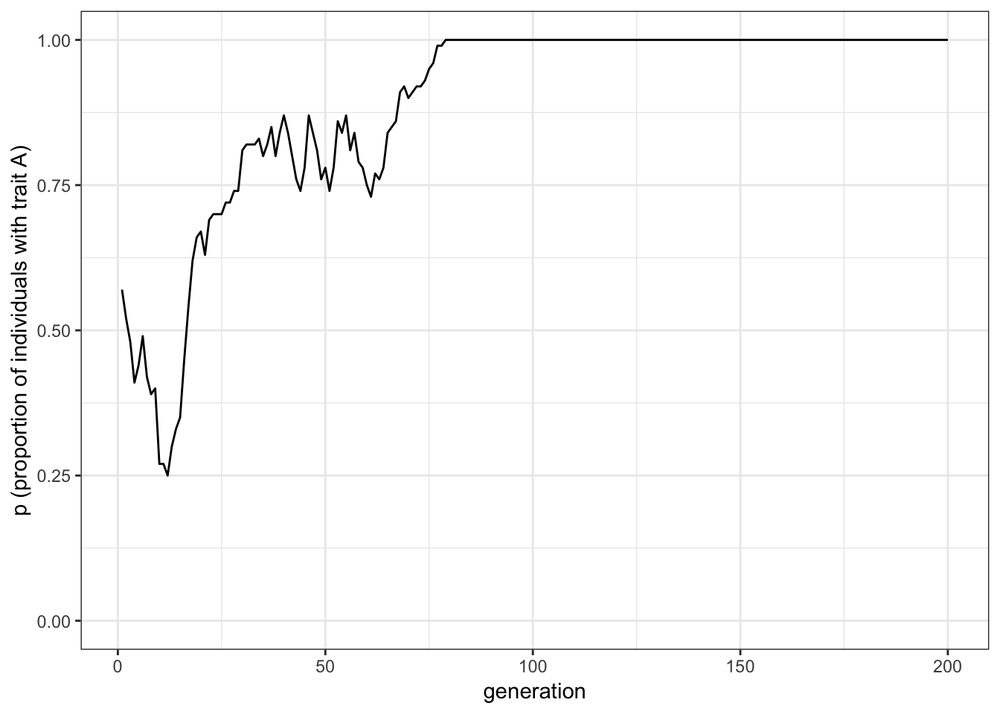
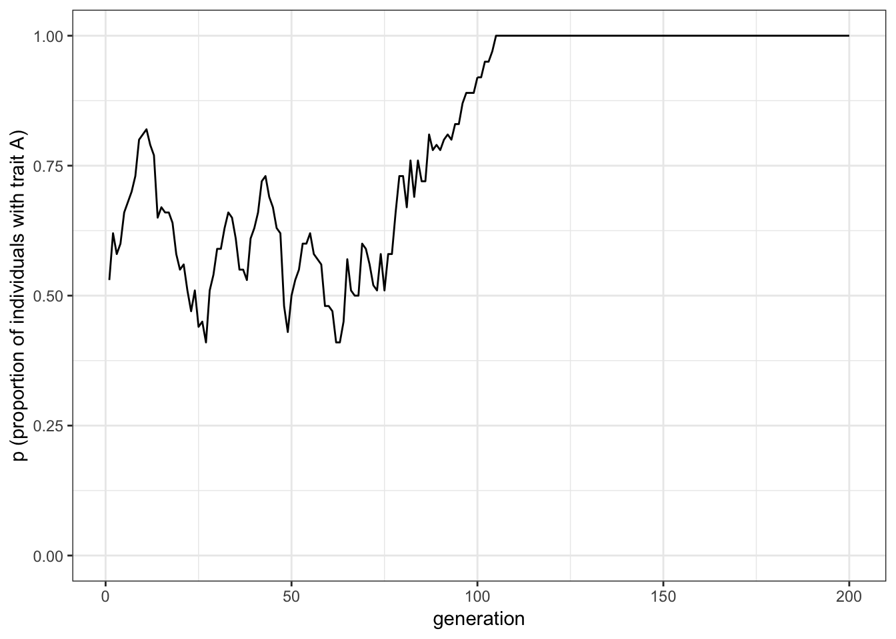
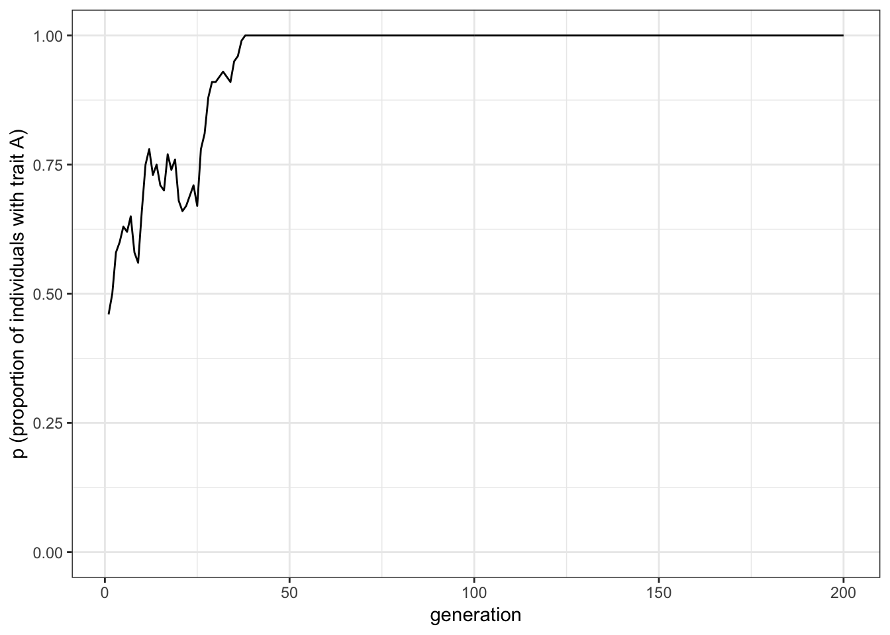

As we have seen in the previous chapter, sometimes more detailed modelling can lead to different results (compared to the abstract case) …….
Henrich’s model, for example, has shown that a populations ability to maintain and accumulate cultural traits depends on its size, whereby larger populations are more likely to retain and improve cultural traits than smaller ones. We used this model as an example that population-level characteristics (here, demography) play a role in cultural dynamics. Given that individuals acquire information from other individuals through social learning, we might also suspect that individual-level phenomena are important, too. Commonly, individual interactions are represented as networks, whereby nodes (also referred to as vertex, pl. vertices) represent individuals, and ties (also referred to as edges) between any two nodes indicate a relationship (e.g. friendship or kinship, or willingness to cooperate, etc.). Note, as with the term individaul-based models, the individual can be a person but it can also represent a country, an institution, or any other kind of actor.
In this chapter, we will cover the basics of social networks, how to create, analyse, and use them. Finally, we will use all of that to find an answer to the question: how do individual-level interaction patterns affect population-level cultural dynamics?
The Basics
Let us start with a small group of colleagues who see each other on a regular base in the office, some are friends, and some are not (sometimes the friendships might not even be reciprocal). For this example, we use gossip as the socially transmitted information. Say, we want to better undersand how gossip is spreading through this group. At simplest level, we might assume that: any two colleagues will exchange gossip whenever they meet. This would reduce the group of colleagues to a well-mixed population, where information can flow freely. However, assume that gossip is only transmitted if two friends interact. Now we have a situation, where information flow is constrained by the underlying friendship network. To explore, how information can spead in that friendship network, we first need to find a way to represent it in R. One way to represent networks is an adjacency matrix. It is a square matrix where all individuals of a population are represent as columns and rows.
m <- matrix(c(0,1,1, 0,0,1, 1,1,0), nrow=3, byrow=T)
row.names(m) <- c("A","B","C")
colnames(m) <- c("A","B","C")
m
## A B C
## A 0 1 1
## B 0 0 1
## C 1 1 0
The matrix above is an example for such an adjacency matrix. Shown are the relationships between three individuals (A, B, and C). When we look at the first row, we see that A has no interaction with itself (indicated by the zero), but interacts both with B and C (indicated by the ones). From the next row we see that B is only interacting with C, and the last row tell us that C interacting both with A and with B. This is an example for an asymmetrix adjacency matrix, because not all interactions are reciprocal (A is interacting with B but B is not interacting with A). We can test this by comparing the upper trianle of the matrix with the lower triangle of the matrix:
## [1] FALSE
We can make this matrix symmetric by replacing the lower matrix triangle with the upper one (this requires us to first transpose the triangle using the t() function):
## A B C
## A 0 1 1
## B 1 0 1
## C 1 1 0
## [1] TRUE
Now let us turn back to out group of co-workers, and let us create a random friendship network. We start with an empty adjacency matrix, add friendships to the upper triangle and then copy the mirror image to the lower triangle (this is assuming that friendships are reciprocal):
## [,1] [,2] [,3] [,4] [,5] [,6] [,7] [,8] [,9] [,10]
## [1,] NA NA NA NA NA NA NA NA NA NA
## [2,] NA NA NA NA NA NA NA NA NA NA
## [3,] NA NA NA NA NA NA NA NA NA NA
## [4,] NA NA NA NA NA NA NA NA NA NA
## [5,] NA NA NA NA NA NA NA NA NA NA
## [6,] NA NA NA NA NA NA NA NA NA NA
## [7,] NA NA NA NA NA NA NA NA NA NA
## [8,] NA NA NA NA NA NA NA NA NA NA
## [9,] NA NA NA NA NA NA NA NA NA NA
## [10,] NA NA NA NA NA NA NA NA NA NA
Now, we randomly assign friendships to one of the triangles. We sample from zeros (no friends) and ones (friends) with equal probability (we could change this value to be higher or lower to simulate groups with more or less friendships):
## [,1] [,2] [,3] [,4] [,5] [,6] [,7] [,8] [,9] [,10]
## [1,] NA 1 1 1 0 1 1 1 1 1
## [2,] NA NA 1 1 1 1 0 1 0 1
## [3,] NA NA NA 0 0 1 0 1 0 0
## [4,] NA NA NA NA 0 0 0 0 1 1
## [5,] NA NA NA NA NA 0 0 0 1 0
## [6,] NA NA NA NA NA NA 1 1 1 1
## [7,] NA NA NA NA NA NA NA 0 0 0
## [8,] NA NA NA NA NA NA NA NA 0 0
## [9,] NA NA NA NA NA NA NA NA NA 1
## [10,] NA NA NA NA NA NA NA NA NA NA
## [,1] [,2] [,3] [,4] [,5] [,6] [,7] [,8] [,9] [,10]
## [1,] NA 1 1 1 0 1 1 1 1 1
## [2,] 1 NA 1 1 1 1 0 1 0 1
## [3,] 1 1 NA 0 0 1 0 1 0 0
## [4,] 1 1 0 NA 0 0 0 0 1 1
## [5,] 0 1 0 0 NA 0 0 0 1 0
## [6,] 1 1 1 0 0 NA 1 1 1 1
## [7,] 1 0 0 0 0 1 NA 0 0 0
## [8,] 1 1 1 0 0 1 0 NA 0 0
## [9,] 1 0 0 1 1 1 0 0 NA 1
## [10,] 1 1 0 1 0 1 0 0 1 NA
## [,1] [,2] [,3] [,4] [,5] [,6] [,7] [,8] [,9] [,10]
## [1,] 0 1 1 1 0 1 1 1 1 1
## [2,] 1 0 1 1 1 1 0 1 0 1
## [3,] 1 1 0 0 0 1 0 1 0 0
## [4,] 1 1 0 0 0 0 0 0 1 1
## [5,] 0 1 0 0 0 0 0 0 1 0
## [6,] 1 1 1 0 0 0 1 1 1 1
## [7,] 1 0 0 0 0 1 0 0 0 0
## [8,] 1 1 1 0 0 1 0 0 0 0
## [9,] 1 0 0 1 1 1 0 0 0 1
## [10,] 1 1 0 1 0 1 0 0 1 0
This is all we need to describe the interactions and the flow of information within this group. And while we could already use other tools in R to analyse it, we should first try to visualise this network to get a better intuition of what this group actualy looks like. The igraph package provides many incredibly useful functions and tools to create, work with, and analyse networks. We will rely on many of its functions in this chapter.
Plotting networks
Given that we already have an adjacency matrix, we can create a network using the graph_from_adjacency_matrix() function.
##
## Attaching package: 'igraph'
## The following objects are masked from 'package:stats':
##
## decompose, spectrum
## The following object is masked from 'package:base':
##
## union
## IGRAPH 51ffaec D--- 10 48 --
## + edges from 51ffaec:
## [1] 1-> 2 1-> 3 1-> 4 1-> 6 1-> 7 1-> 8 1-> 9 1->10
## [9] 2-> 1 2-> 3 2-> 4 2-> 5 2-> 6 2-> 8 2->10 3-> 1
## [17] 3-> 2 3-> 6 3-> 8 4-> 1 4-> 2 4-> 9 4->10 5-> 2
## [25] 5-> 9 6-> 1 6-> 2 6-> 3 6-> 7 6-> 8 6-> 9 6->10
## [33] 7-> 1 7-> 6 8-> 1 8-> 2 8-> 3 8-> 6 9-> 1 9-> 4
## [41] 9-> 5 9-> 6 9->10 10-> 1 10-> 2 10-> 4 10-> 6 10-> 9
When we return the net object, we receive a lot of information about our network, for example, that it is there are 10 vertices and 48 edges (for more information be sure to have a look at this short igraph introduction). However, we did not receive an actual network figure. For this, we can use the R’s generic plot function:

This is the most basic network plot where each node (with the numbers 1 to 10) and their connections (edges/ties) are plotted such that nodes that receive more connections are more central and those that receive less are more peripheral. Note, every time you plot the network, it will have a slightly different layout. If you would like to preserve the node positions you can uncomment the set.seed() function in the code chunck above.
There are many ways to change the looks of network plots. The igraph manual is an ideal starting point to learn more about it. For example, we could plot nodes based on specific layout functions:

Or we can directly change the size, and colour of nodes:

In the previous example, we have changed the colour of the nodes’ background and text, and their overall size (attributes starting with vertex.). We have also changed the colour of the edges, their width, and the size of the tips (attributes starting with edge.).
Let’s say, we know the age of each individual and we would like to visualise age as different colours of the nodes. For that, we should first store the colour information for each vertex (using the V() function) and then change the vertex colour in the plot function:
## NULL
## [1] 7 4 1 8 5 8 10 10 5 1
## IGRAPH 51ffaec D--- 10 48 --
## + attr: age (v/n), colour (v/c)
## + edges from 51ffaec:
## [1] 1-> 2 1-> 3 1-> 4 1-> 6 1-> 7 1-> 8 1-> 9 1->10
## [9] 2-> 1 2-> 3 2-> 4 2-> 5 2-> 6 2-> 8 2->10 3-> 1
## [17] 3-> 2 3-> 6 3-> 8 4-> 1 4-> 2 4-> 9 4->10 5-> 2
## [25] 5-> 9 6-> 1 6-> 2 6-> 3 6-> 7 6-> 8 6-> 9 6->10
## [33] 7-> 1 7-> 6 8-> 1 8-> 2 8-> 3 8-> 6 9-> 1 9-> 4
## [41] 9-> 5 9-> 6 9->10 10-> 1 10-> 2 10-> 4 10-> 6 10-> 9
The net object now has two attributes (one is called age, with numeric values, and one is called colour, with character values). We can now plot this graph:

It can be useful to remove the text in each node and make the nodes smaller, especially when the networks become large. Also, given that we have a symmetric network (all relationships are reciprocal), we can get rid of the arrow tips. We do this by telling igraph that the network is undirected.

One final styling example. So far, we have the edges indicate the existence of friendship relationships, which is a binary quality. However, we can also imagine friendship as a continous variable (from strong$=\(1 to none\)=$0). Using the edge function E(), we can add attributes to the edges in the network. We can use those to alter the width of edges depending on their relationship strength. To do that, we will first change the adjacency matrix (from binary to contionous values) and then plot the new network.
## IGRAPH 22dab45 U-W- 10 24 --
## + attr: weight (e/n)
## + edges from 22dab45:
## [1] 1-- 2 1-- 3 1-- 4 1-- 6 1-- 7 1-- 8 1-- 9 1--10 2-- 3 2-- 4
## [11] 2-- 5 2-- 6 2-- 8 2--10 3-- 6 3-- 8 4-- 9 4--10 5-- 9 6-- 7
## [21] 6-- 8 6-- 9 6--10 9--10
Note, igraph automatically added an attribute called weight. Now, let’s plot this network with the edge width representing their weight:

You can now observe strong and week relationships between individuals, their location in relation to each other, and how they cluster. In the next section, we will try to quantify what we observe here.
Analyse networks
There is a variety of measures to describe the structure of our graph (another term for network). We can generally differentiate between properties of the network and properties of the vertices:
Network properties
We can retrieve the most basic information about our network using:
## + 10/10 vertices, from 23272e3:
## [1] 1 2 3 4 5 6 7 8 9 10
## + 24/24 edges from 23272e3:
## [1] 1-- 2 1-- 3 2-- 3 1-- 4 2-- 4 2-- 5 1-- 6 2-- 6 3-- 6 1-- 7
## [11] 6-- 7 1-- 8 2-- 8 3-- 8 6-- 8 1-- 9 4-- 9 5-- 9 6-- 9 1--10
## [21] 2--10 4--10 6--10 9--10
If our networks have attributes stored (for the vertices or edges), we can retrieve them with the following two functions:
## $age
## [1] 7 4 1 8 5 8 10 10 5 1
##
## $colour
## [1] "#FFDB00FF" "#FF6D00FF" "#FF0000FF" "#FFFF00FF" "#FF9200FF"
## [6] "#FFFF00FF" "#FFFFBFFF" "#FFFFBFFF" "#FF9200FF" "#FF0000FF"
## named list()
With vcount() and ecount(), we can return the number of vertices (10) and edges (24) in our graph.
## [1] 10
## [1] 24
Let us now look at a variety of measures that we can calculate to characterise our network.
Diameter is a measure for the longest (geodesic) path, i.e. the largest number of steps that are necessary to reach two vertices in a network (using farthest_vertices() we can return the ID of the two vertices).
## [1] 3
Average path length is the average number of steps that need to be traveresed between any two vertices (aka as dyad). We can also use the distance() function to return a distance matrix similar to the adjacency matrix.
## [1] 1.488889
Edge density is the proportion of edges present in the graph relative to the number of possible edges (i.e. in a fully connected network with the same number of nodes).
## [1] 0.5333333
Reciprocity (relevant for directed graphs only) calculates the proportion of mutual edges. As we have a directed graph, this value is one.
## [1] 1
Clustering coefficient (aka transitivity, or cliquishness) is the probability that the two neighbours of a vertex are neighbours of each other. This is also called a triangle, and often the image of ‘my friends are friends with each other’ is used.
## [1] 0.6
Vertex properties
Additional to these high-level measures, we can use a series of node-level measures to describe connectivity in more detail:
Degree centrality refers to the number of (incoming/outgoing/both) edges of a vertex. We can use the degree() function to determine the degree centrality of each node:
## [1] 8 7 4 4 2 7 2 4 5 5
## [1] TRUE
## [1] 4.8
Strength is similar to degree centrality but relevant for weighted networks. It is the sum of all adjacent edge weights (a node might have many edges but with very low weights and so with high degree centrality but low strength). In our case (unweighted network), degree() and strength() produce the same result:
## [1] 2 2 4 4 4 5 5 7 7 8
Closeness centrality represents the number ofsteps it takes from a given vertex to any other vertex in the network. It is a measure for hoe long information on average takes to arrive at this node.
## [1] 0.10000000 0.09090909 0.07142857 0.07142857 0.05882353
## [6] 0.09090909 0.05882353 0.07142857 0.07692308 0.07692308
Note that the values are $<$1. This is because igraph defines closeness centrality as ‘the inverse of the average length of the shortest paths to/from all the other vertices in the graph.’
Betweenness centrality is the number of shortest paths between nodes that pass through a particular node. It is often seen as a measure for a node’s gatekeeping or brokerage potential:
## [1] 7.116667 6.416667 0.000000 0.200000 0.200000 4.866667
## [7] 0.000000 0.000000 2.750000 0.450000
Eigentvector centrality is the eigenvector of the adjacency matrix. Vertices with a high eigenvector centrality are connected to many individuals who are connected to many individuals, and so on (see also page rank, page_rank(), and authority, authority_score(), score functions).
## [1] 1.0000000 0.8876106 0.6321015 0.6071980 0.2845588 0.9054004
## [7] 0.3516400 0.6321015 0.6543030 0.7482566
10 Social network structure
As we have seen in the previous chapter, sometimes more detailed modelling can lead to different results (compared to the abstract case) ……. Henrich’s model, for example, has shown that a populations ability to maintain and accumulate cultural traits depends on its size, whereby larger populations are more likely to retain and improve cultural traits than smaller ones. We used this model as an example that population-level characteristics (here, demography) play a role in cultural dynamics. Given that individuals acquire information from other individuals through social learning, we might also suspect that individual-level phenomena are important, too. Commonly, individual interactions are represented as networks, whereby nodes (also referred to as vertex, pl. vertices) represent individuals, and ties (also referred to as edges) between any two nodes indicate a relationship (e.g. friendship or kinship, or willingness to cooperate, etc.). Note, as with the term individaul-based models, the individual can be a person but it can also represent a country, an institution, or any other kind of actor.
In this chapter, we will cover the basics of social networks, how to create, analyse, and use them. Finally, we will use all of that to find an answer to the question: how do individual-level interaction patterns affect population-level cultural dynamics?
10.1 The Basics
Let us start with a small group of colleagues who see each other on a regular base in the office, some are friends, and some are not (sometimes the friendships might not even be reciprocal). For this example, we use gossip as the socially transmitted information. Say, we want to better undersand how gossip is spreading through this group. At simplest level, we might assume that: any two colleagues will exchange gossip whenever they meet. This would reduce the group of colleagues to a well-mixed population, where information can flow freely. However, assume that gossip is only transmitted if two friends interact. Now we have a situation, where information flow is constrained by the underlying friendship network. To explore, how information can spead in that friendship network, we first need to find a way to represent it in R. One way to represent networks is an adjacency matrix. It is a square matrix where all individuals of a population are represent as columns and rows.
The matrix above is an example for such an adjacency matrix. Shown are the relationships between three individuals (A, B, and C). When we look at the first row, we see that A has no interaction with itself (indicated by the zero), but interacts both with B and C (indicated by the ones). From the next row we see that B is only interacting with C, and the last row tell us that C interacting both with A and with B. This is an example for an asymmetrix adjacency matrix, because not all interactions are reciprocal (A is interacting with B but B is not interacting with A). We can test this by comparing the upper trianle of the matrix with the lower triangle of the matrix:
We can make this matrix symmetric by replacing the lower matrix triangle with the upper one (this requires us to first transpose the triangle using the
t()function):Now let us turn back to out group of co-workers, and let us create a random friendship network. We start with an empty adjacency matrix, add friendships to the upper triangle and then copy the mirror image to the lower triangle (this is assuming that friendships are reciprocal):
Now, we randomly assign friendships to one of the triangles. We sample from zeros (no friends) and ones (friends) with equal probability (we could change this value to be higher or lower to simulate groups with more or less friendships):
This is all we need to describe the interactions and the flow of information within this group. And while we could already use other tools in R to analyse it, we should first try to visualise this network to get a better intuition of what this group actualy looks like. The
igraphpackage provides many incredibly useful functions and tools to create, work with, and analyse networks. We will rely on many of its functions in this chapter.10.2 Plotting networks
Given that we already have an adjacency matrix, we can create a network using the
graph_from_adjacency_matrix()function.When we return the
netobject, we receive a lot of information about our network, for example, that it is there are 10 vertices and 48 edges (for more information be sure to have a look at this short igraph introduction). However, we did not receive an actual network figure. For this, we can use the R’s generic plot function:
This is the most basic network plot where each node (with the numbers 1 to 10) and their connections (edges/ties) are plotted such that nodes that receive more connections are more central and those that receive less are more peripheral. Note, every time you plot the network, it will have a slightly different layout. If you would like to preserve the node positions you can uncomment the
set.seed()function in the code chunck above.There are many ways to change the looks of network plots. The igraph manual is an ideal starting point to learn more about it. For example, we could plot nodes based on specific layout functions:

Or we can directly change the size, and colour of nodes:
In the previous example, we have changed the colour of the nodes’ background and text, and their overall size (attributes starting with
vertex.). We have also changed the colour of the edges, their width, and the size of the tips (attributes starting withedge.).Let’s say, we know the age of each individual and we would like to visualise age as different colours of the nodes. For that, we should first store the colour information for each vertex (using the
V()function) and then change the vertex colour in the plot function:The
netobject now has two attributes (one is called age, with numeric values, and one is called colour, with character values). We can now plot this graph:It can be useful to remove the text in each node and make the nodes smaller, especially when the networks become large. Also, given that we have a symmetric network (all relationships are reciprocal), we can get rid of the arrow tips. We do this by telling igraph that the network is undirected.

One final styling example. So far, we have the edges indicate the existence of friendship relationships, which is a binary quality. However, we can also imagine friendship as a continous variable (from strong$=\(1 to none\)=$0). Using the edge function
E(), we can add attributes to the edges in the network. We can use those to alter the width of edges depending on their relationship strength. To do that, we will first change the adjacency matrix (from binary to contionous values) and then plot the new network.Note, igraph automatically added an attribute called
weight. Now, let’s plot this network with the edge width representing their weight:You can now observe strong and week relationships between individuals, their location in relation to each other, and how they cluster. In the next section, we will try to quantify what we observe here.
10.3 Analyse networks
There is a variety of measures to describe the structure of our graph (another term for network). We can generally differentiate between properties of the network and properties of the vertices:
10.3.1 Network properties
We can retrieve the most basic information about our network using:
If our networks have attributes stored (for the vertices or edges), we can retrieve them with the following two functions:
With
vcount()andecount(), we can return the number of vertices (10) and edges (24) in our graph.Let us now look at a variety of measures that we can calculate to characterise our network.
Diameter is a measure for the longest (geodesic) path, i.e. the largest number of steps that are necessary to reach two vertices in a network (using
farthest_vertices()we can return the ID of the two vertices).Average path length is the average number of steps that need to be traveresed between any two vertices (aka as dyad). We can also use the
distance()function to return a distance matrix similar to the adjacency matrix.Edge density is the proportion of edges present in the graph relative to the number of possible edges (i.e. in a fully connected network with the same number of nodes).
Reciprocity (relevant for directed graphs only) calculates the proportion of mutual edges. As we have a directed graph, this value is one.
Clustering coefficient (aka transitivity, or cliquishness) is the probability that the two neighbours of a vertex are neighbours of each other. This is also called a triangle, and often the image of ‘my friends are friends with each other’ is used.
10.3.2 Vertex properties
Additional to these high-level measures, we can use a series of node-level measures to describe connectivity in more detail:
Degree centrality refers to the number of (incoming/outgoing/both) edges of a vertex. We can use the
degree()function to determine the degree centrality of each node:Strength is similar to degree centrality but relevant for weighted networks. It is the sum of all adjacent edge weights (a node might have many edges but with very low weights and so with high degree centrality but low strength). In our case (unweighted network),
degree()andstrength()produce the same result:Closeness centrality represents the number ofsteps it takes from a given vertex to any other vertex in the network. It is a measure for hoe long information on average takes to arrive at this node.
Note that the values are $<$1. This is because
igraphdefines closeness centrality as ‘the inverse of the average length of the shortest paths to/from all the other vertices in the graph.’Betweenness centrality is the number of shortest paths between nodes that pass through a particular node. It is often seen as a measure for a node’s gatekeeping or brokerage potential:
Eigentvector centrality is the eigenvector of the adjacency matrix. Vertices with a high eigenvector centrality are connected to many individuals who are connected to many individuals, and so on (see also page rank,
page_rank(), and authority,authority_score(), score functions).10.4 Using social networks to model information transmission
How can we